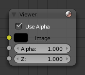

预览器节点¶

预览器节点。
预览器 节点是一个临时性的，合成进程中的查看器。它可以放置在节点流程树中的任意地方以检查图像或者是值映射情况。
当场景中有多个预览器节点时，可以通过鼠标左键进行图像结果显示的切换。当在任意节点上使用 Shift-Ctrl-LMB 组合热键，将在此节点上自动连接一个查看器节点。
属性¶
- 平铺顺序
平铺顺序用属性面板（热键：N） 平铺顺序 下拉选框定义了背景图的显示（在查看器节点被选中的前提下，查看属性面板的 属性 卷展栏）：
- 三分法
- 依据 三分法 定义的九个区域进行扩展。
- 底视图
- 从底部计算并展开。
- 随机
- 随机尺寸计算并展开。
- 中心
沿着特定的X,Y轴向和轴心从中央展开。
X，Y轴
使用 UV/图像 编辑器¶
查看器节点可以将图像结果在UV/图像编辑器中进行显示。在“合成屏幕布局”中，当 查看器节点 被选择的状态下，左下角的UV/图像编辑器窗口，与之关联的 Viewer Node 数据菜单会出现查看器图像的选择项，将当前被选择的查看器对应的图像结果显示在UV/图像编辑器窗口中。
要保存当前查看器节点的图像，使用 , F3 来将单帧图像输出为图像文件保存。
UV/图像 编辑器在标题栏也有额外的三种查看图像的方式：不带Alpha通道或包含Alpha通道的图像，单独查看Alpha或Z通道。在图像上单击 鼠标左键 显示允许用户查看当前点击位置的采样信息（坐标位置，颜色值等信息）。